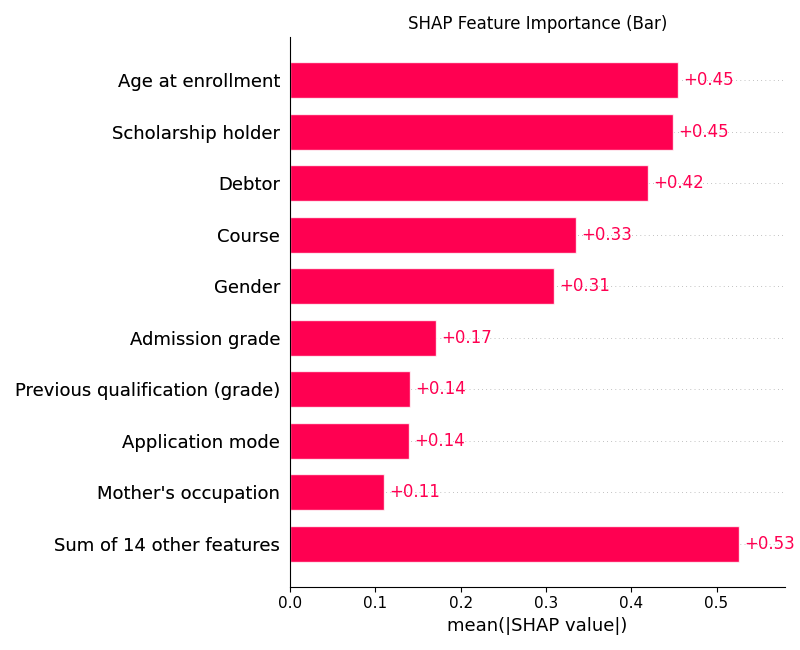
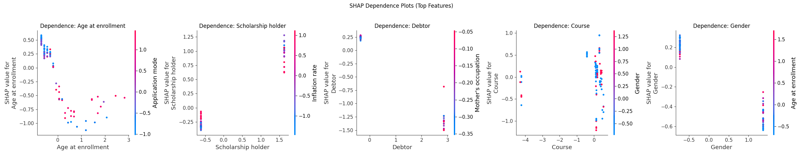

Explainability
Explainability methods provide insights into how machine learning models make predictions, allowing us to understand which features drive decisions, detect potential biases, and build trust in automated systems. By visualizing and interpreting model behavior, we can ensure transparency and fairness in data-driven applications.
SHAP Plots
SHAP Feature Importance
Shows the average absolute SHAP value for each feature, indicating which features have the greatest impact on model predictions. 
- From the plot above, we see that Age at enrollment, Scholarship holder, and Debtor are the most influential features in the model, each with a mean SHAP value above 0.4.
- This means changes in these features have the largest effect on the model's output. Other important features include Course and Gender, while features like Mother's occupation and Application mode have a smaller impact.
- The Sum of 14 other features indicates that, collectively, less important features still contribute to the model's decisions. High SHAP values suggest strong influence, so these top features should be carefully considered when interpreting or auditing the model's behavior.
SHAP Beeswarm
Combines feature importance and the effect direction for each sample, showing how each feature influences individual predictions. It shows how each feature affects individual predictions, with each dot representing a sample. The color indicates the feature value (red = high, blue = low). For example, high values of Age at enrollment (red dots) tend to push the model output higher, while low values (blue dots) push it lower. The spread of dots along the x-axis (SHAP value) shows the range of impact for each feature.
 The beeswarm plot shows how the value of each feature affects the model's prediction in a positive or negative way:
The beeswarm plot shows how the value of each feature affects the model's prediction in a positive or negative way:
- For Age at enrollment, higher values (red dots) tend to increase the prediction, while lower values (blue dots) decrease it.
- For Scholarship holder, having a scholarship (high value) generally increases the prediction, while not having one decreases it.
- For Debtor, being a debtor (high value) pushes the prediction higher, while not being a debtor lowers it.
- For Course and Gender, the effect depends on the specific value, but you can see that certain values (red or blue) consistently push the prediction up or down.
- Features with dots spread far to the right (positive SHAP value) increase the model output, while those spread to the left (negative SHAP value) decrease it.
- Most other features have little effect, as their dots are clustered near zero.
In summary, the plot reveals which feature values drive the prediction higher or lower, helping to understand the direction and strength of each feature's impact on the model's decisions.
SHAP Dependence Plots (Top 5 Features)
Shows the relationship between a feature's value and its SHAP value, revealing interaction effects and non-linearities for the most important features.  These plots show how the value of each top feature affects the model's prediction:
- For Age at enrollment, higher values generally lead to lower SHAP values, meaning the model predicts a lower outcome for older students. The effect is strongest for the youngest ages.
- For Scholarship holder, having a scholarship (value near 1) is associated with higher SHAP values, so the model predicts a higher outcome for scholarship holders.
- For Debtor, being a debtor (value near 1) is linked to lower SHAP values, indicating a negative effect on the prediction.
- For Course, the effect varies by course, but some courses are associated with higher or lower predictions depending on their value.
- For Gender, the model predicts lower outcomes for one gender (value near 1) and higher for the other (value near 0), showing a clear separation in impact.
The color bars show how another feature interacts with the main feature, revealing possible dependencies. Overall, these plots help identify not only the direction of each feature's effect, but also how combinations of features can influence the model's output.
SHAP analysis provides a comprehensive view of how individual features and their values influence model predictions. In this study, a small set of features—especially Age at enrollment, Scholarship holder, and Debtor—were found to drive most of the model's decisions, with clear positive or negative effects depending on their values. Other features play a more minor role. The combination of bar, beeswarm, and dependence plots allows us to interpret not only which features matter most, but also how they interact and affect outcomes for different individuals. This level of transparency is essential for building trust, detecting bias, and ensuring fairness in machine learning applications.